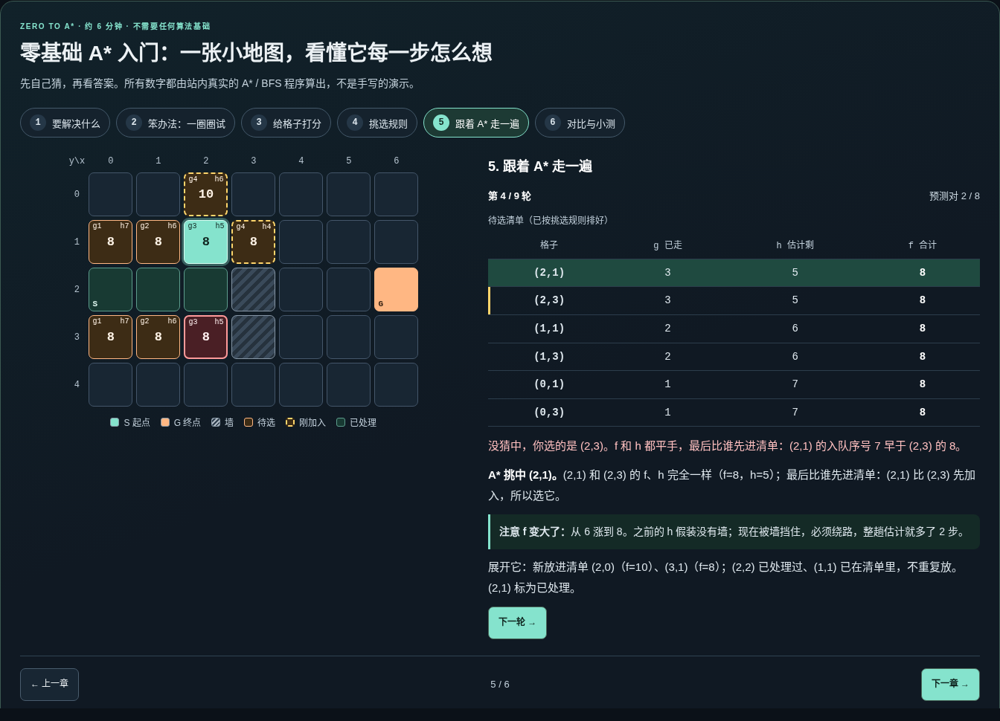

PathLab AI / 作品介绍2026.11.10 | V2 ADDENDUM
v2 更新：让零基础学生真正学会 A*
评审意见与定位
首次评审 68 分。评语：“看完之后还是没有学会 A* 算法，建议优化一下，比如找一个完全没有学过算法的同学测试一下。”
评语指向的是教学效果，而不是工程质量。我们对照 v1 源码，逐项找出零基础学生会卡住的地方：
| v1 现状 | 新手的卡点 | v2 改进 |
|---|
进站直接做关卡，候选卡只写 g 1 · h 7 · f 8 | 不知道 g、h、f 是什么就被要求预测 | 首页第一板块新增 6 章「A* 零基础入门」，主按钮直达 |
| 提示用“曼哈顿距离”等术语 | 没有可动手的例子 | 用打车计价和导航预估作类比，学生在格子上分三步亲手算 g、h、f |
| 猜错后只提示“对照 f、h、入队序号逐项解释” | 不知道哪个数更小、为什么会被选中 | 用真实数字说明，例如“先比 f：(2,1) 的 f=3+5=8，比你选的…更小” |
图 v2-1｜首页：首屏主按钮“第一次学？先上 6 分钟 A* 入门”，入门板块位于任务工作台之前（离线 HTML 实际截图，1440 宽）。
PathLab AI / 作品介绍2026.11.10 | V2 ADDENDUM
关键体验：先猜，再看 A* 怎么想

图 v2-2｜第 5 章第 4 轮：学生猜 (2,3)，A* 选了 (2,1)。页面先说明“f 和 h 都平手，比加入先后”，再解释为什么 f 从 6 涨到了 8（墙迫使绕路）。
六章学习路径（约 6 分钟，不需要任何算法基础）
- 要解决什么：配送任务，只能走上下左右，先猜最少要几步。
- 笨办法：一圈圈试：BFS 像水波一样扩散，能找到路，但不知道终点在哪个方向。
- 给格子打分：g 是已经走的步数，h 是不看墙时估计还剩的步数，f = g + h；学生亲手算一次。
- 挑选规则：整个 A* 只有三句话——挑 f 最小的格子，判断到没到终点，没到就展开邻居。
- 跟着 A* 走一遍：9 轮逐轮预测；每轮说明是哪条规则决定了胜负，展开了哪些格子、跳过了哪些。
- 对比与小测：BFS 处理 29 格，A* 只处理 8 格，两者路线一样短；最后做 5 道小测，再进入真实关卡。
真实性：入门中的所有数字由站内 runAstar / runBfs 实时计算，单元测试锁定“讲解与引擎一致”。验证由 AI 执行：Node 160/160；离线 HTML 在四种视口下回归 280/280；各章 axe 无障碍检查 0 违规。另做两轮 AI 模拟零基础学生走查，发现的问题均已修复——这不是真人测试。真人新手测试记录表见 docs/verification-astar-primer.md 第 7 节。